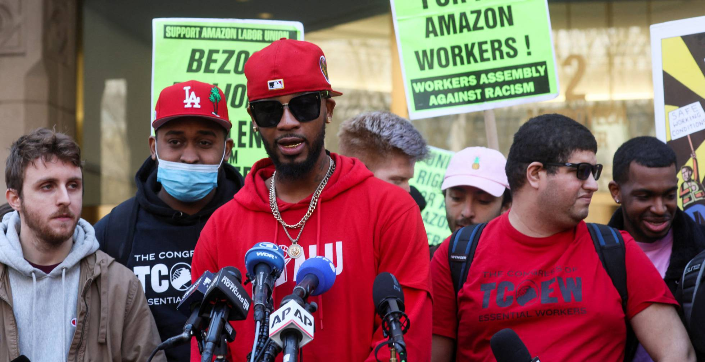

La defensora de los derechos humanos, pionera en la lucha por encontrar a los desaparecidos en México, fue candidata dos veces a la presidencia de México. “La CNDH lamenta el sensible fallecimiento de la luchadora social, Rosario Ibarra de Piedra, madre de nuestra presidenta, de Claudia, Carlos y Jesús esta mañana en la ciudad de Monterrey, Nuevo León”, señaló la dependencia en su cuenta oficial de Twitter. El presidente Andrés Manuel López Obrador fue de los primeros en manifestar su pésame. "Murió doña Rosario Ibarra de Piedra, quien nos recordará siempre el más profundo amor a los hijos y la solidaridad con quienes sufren por la desaparición de sus seres queridos. Ese era su verdadero partido aun cuando admiraba a Giordano Bruno", escribió en su cuenta de Twitter.

El 1 de abril más de 2.600 trabajadores de la fábrica de Staten Island se han mostrado a favor de organizarse sindicalmente, frente a algo más de 2.100 que votaron en contra Los trabajadores de una planta de Amazon en Nueva York han votado a favor de crear el primer sindicato del gigante tecnológico en Estados Unidos, según ha confirmado uno de sus líderes sindicales este viernes. "Hemos trabajado, nos hemos divertido y hemos hecho historia. Doy la bienvenida al primer sindicato de Amazon en Estados Unidos", ha escrito el líder sindical Christian Smalls, en su cuenta de Twitter.
Buscan con ansia salir de Rusia porque hay un rumor persistente de que el gobierno del presidente Vladimir Putin podría introducir la ley marcial para enfrentar las protestas contra la invasión a Ucrania. Con los vuelos a Europa suspendidos la única forma de salir del país es cruzando la frontera en automóvil o en tren. Además de la ley marcial otro de los motivos principales por los que muchos están abandonando el país es el miedo de acabar en la cárcel por no estar de acuerdo con la guerra en contra de Ucrania.
El presidente Andrés Manuel López Obrador inauguró este lunes el Aeropuerto Internacional Felipe Ángeles (AIFA), ubicado en la Base Aérea Militar Número 1 de Santa Lucía, en el Estado de México. En el evento participaron la jefa de Gobierno de la Ciudad de México, Claudia Sheinbaum Pardo; el gobernador del Estado de México, Alfredo del Mazo Maza; el gobernador de Hidalgo, Omar Fayad, además de funcionarios e integrantes de su gabinete.
Miles de mujeres se unieron este 8 de marzo para alzar la voz para hacer valer sus derechos y exigir un alto a la violencia de género. Alzar la voz, hacer valer los derechos de mujeres y erradicar un sistema patriarcal, fueron algunas de las peticiones durante la marcha en la capital mexiquense este 8 de marzo de 2022. Aproximadamente 30 colectivos mexiquenses participaron en las protestas de mujeres por la conmemoración al Día Internacional de la Mujer, desde las 12:00 del día acudieron a diversos puntos de la ciudad. Con pancartas, tambores y gritos, inició el primer movimiento en el monumento a Benito Juárez en la calle Independencia en el que al menos de 30 mujeres avanzaron hasta el Monumento a la Maestra con destino al Parque Simón Bolívar, lugar en el que inició la última manifestación a las 15:00 horas.

Debido a los recientes acontecimientos entre el conflicto entre Rusia y Ucrania, los mercados y monedas se han disparado en picada. Además de el cambio en distintos costos de materia prima. Siendo los componentes de computadores uno de los mercados mas afectados, bajando los costos en la venta al público. Si bien este no es el único mercado afectado, es uno de los mas notables en cuanto a costos. Inversionistas y empresarios se preguntan que tanto podría afectar esto en los metales, cripto monedas y de más.
Las empresas de tarjetas de crédito Visa y Mastercard anunciaron el sábado la suspensión de sus operaciones en Rusia, las últimas grandes firmas estadounidenses en congelar su actividad comercial con Moscú por su invasión de Ucrania. Mastercard dijo que decidió "suspender nuestros servicios de red en Rusia", "teniendo en cuenta la naturaleza sin precedentes del conflicto actual y el entorno económico incierto". Por su parte, Visa indicó que trabajará de forma "inmediata" con sus "clientes y socios dentro de Rusia para detener todas las transacciones de Visa en los próximos días".